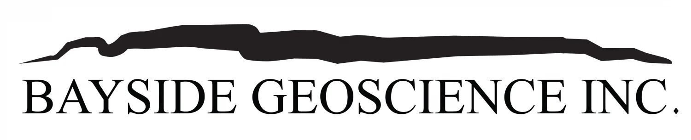
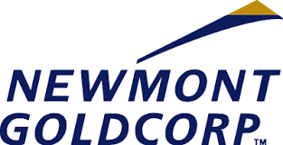
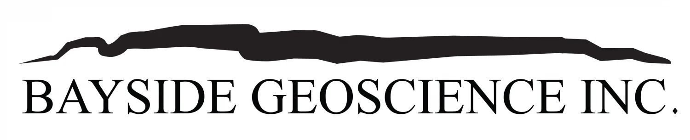
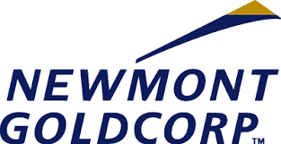

My work history is fairly convoluted and vast as I have been a part of numerous very different jobs over the years. This includes working at an archaeological dig site, at a fly in fishing camp, at an assay lab, working at Parks Canada, and even for a little bit working at one of the grain elevators in town. All these very different and interesting jobs served as a way of finding what I wanted to do with my life as well as a temporary layover in life until I finally found my interest in geology and GIS.


My work history is fairly convoluted and vast as I have been a part of numerous very different jobs over the years. This includes working at an archaeological dig site, at a fly in fishing camp, at an assay lab, working at Parks Canada, and even for a little bit working at one of the grain elevators in town. All these very different and interesting jobs served as a way of finding what I wanted to do with my life as well as a temporary layover in life until I finally found my interest in geology and GIS.
My career as a geologist is also one of constant change not due to any actions taken but rather unfortunate timing. I got very lucky as my first geology job was working directing for Goldcorp at their Musselwhite Mine site as a field geologist doing the leg work for their Karl Zeemal sampling project trying to locate adjacent gold deposits (Musselwhite Mine can be seen in the first picture on the left). This was unfortunately just a summer gig so it ended in the mid-fall of 2017.
My next job was actually at a consulting engineering company called DST Consulting Engineers Inc. This was at the Newgold Rainy River mine near Fort Francis, Ontario. I got to learn whole new skill sets with the company that were all engineering focused. I had a lot of freedom to work at my own pace there and the experience helped me really think on my own and figure things out without the crutches of constant supervision. However while working there I did not get to do what I really enjoyed and that was the detective-style work involved in exploration geology. So in the summer of 2018 I got a job back with Goldcorp.
This time at Goldcorp I was a full fledged exploration geologist dealing with newly drilled prospects around the site and helping figure out what factors were involved with gold deposition. The job wasn't always fulfilling and glamorous as almost all jobs have their grunt work, this time it was in the form of core logging. Any geologist will tell you that core logging gets old fast but all the people I worked with were amazing and greatly helped move the time along in those moments.
My time at Musselwhite was sort of slowly halted when the underground fire occurred in the summer of 2019 at the same time they were merged with Newmont Gold so many of us were layed off. Since in geology most aspects of the career have elements of seasonality to them, being layed off in the late summer/early fall did not bode well for any immediate job search thus I took the fall off to try and find some job prospects I would really enjoy. This led to myself meeting with Steve Flank and becoming a contract geologist with him and his wifes company Bayside Geosciences Inc. Almost comedically my first contract with them was back at the same site Musselwhite Mine doing the exact same job I was doing before. However this only lasted until the summer of 2020 when Newmont fully transitioned all Goldcorps assets to their own resulting in a few waves of layoffs of which I was the victim of one.
After the third time leaving the mine site I decided it was time to go into the computer based side of things which I have always enjoyed and had an affinity for. Steve was generous enough to pay me to learn the ins and outs of QGIS, the open source software equivalent of ArcGIS. I learned a lot and got to make geological maps and claims maps for him which only fueled my desire further to get into this line of work. After my passion for the field was stoked enough I decided to leave Bayside to dive into the GIS Specialists program at Fleming College.